Tours 2009

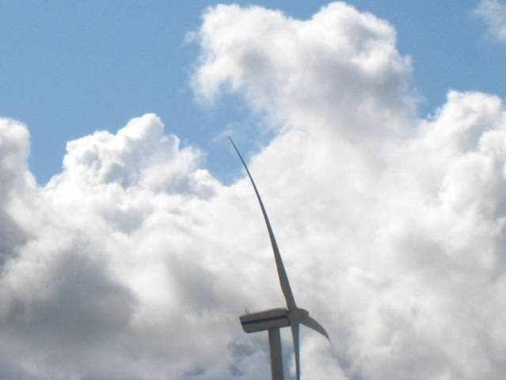
C'est parti pour Tours où Michel Gressier, l'Agence du Vent et un tas de bénévoles organisent le meeting annuel... En chemin, un vent fou qui secoue le camion et courbe les pales des éoliennes, qui, pour une fois tournent...

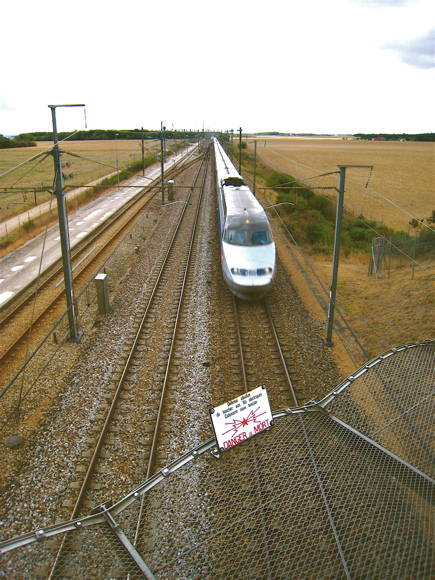
Petit pique-nique dans la Beauce, j'entends des bruits bizarres, le TGV ne passe pas loin...

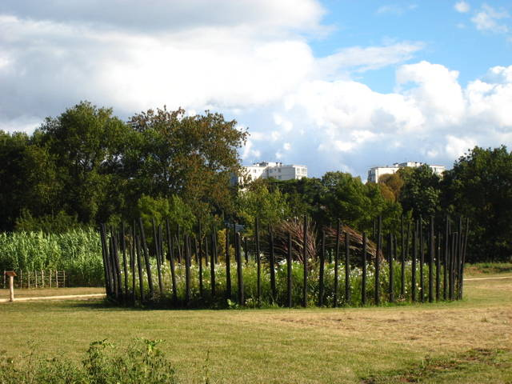
La Plaine de la Gloriette s'est pas mal enrichie... Le terrain où se garaient les campings-cars des cervolistes a été planté de quelques jardins supplémentaires...

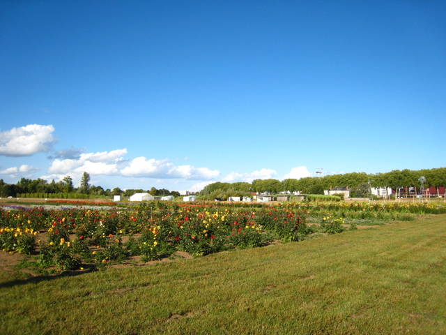
Et le champ labouré qui était derrière est maintenant un parking ouvert sur des parterres de fleurs et sur la plaine de vol ! En se levant, on voit si les autres sont déjà en l'air !

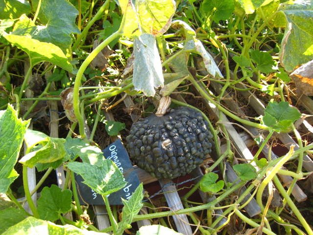
Les jardins abritent un tas de choses étranges, comme cette cucurbite baptisée "oignon" au mépris de la classification...

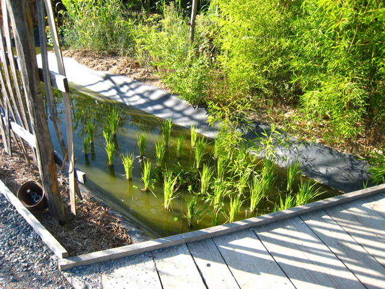
Dans la pseudo-rivière qui irrigue le total, on a planté quelque chose qui pourrait bien être du riz, j'en ai déjà mangé, mais je n'en ai jamais vu pousser...

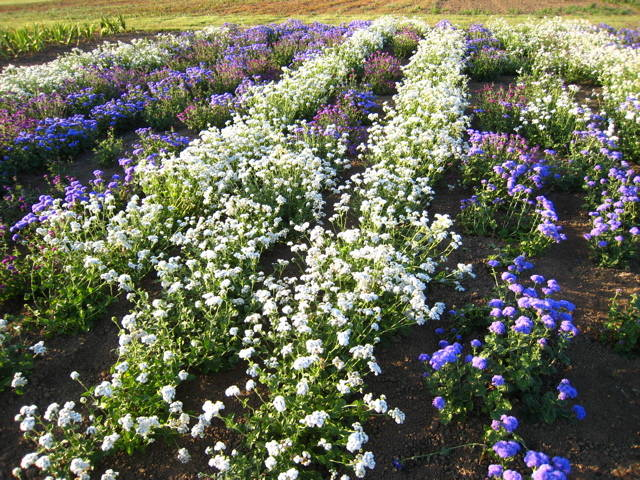
Devant le parking cervolistes, des rangées de dahlias, de roses, d'immortelles et de plein de fleurs inconnues (de moi) qui se dépensent généreusement !

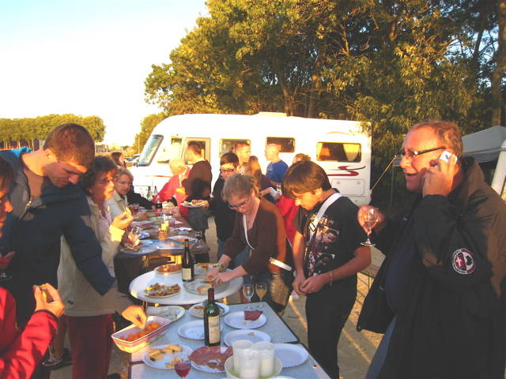
Au soir, comme maintenant traditionnel, petit (si on peut dire...) repas en plein air avec les spécialités régionales apportées par la plupart des participants arrivés !

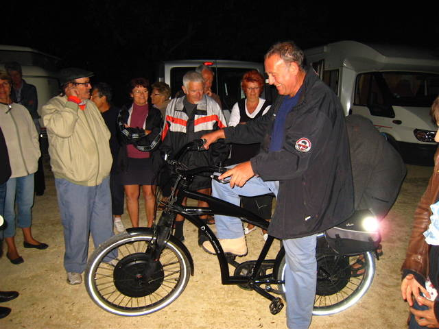
Michel fait une démo de son nouveau vélo électrique ! Les batteries sont dans la roue avant, le moteur dans la roue arrière. Ca fonce... mais ils n'ont bizarrement pas prévu d'éclairage ! Le guidon serait prévu pour mettre la planche de surf, on attend la démo, Michel...

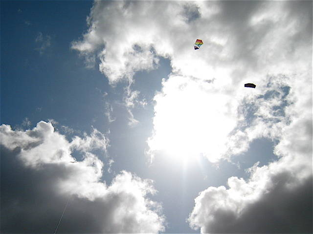
en haut de son chene a Brouilly, merci a tous...
Samedi matin, pas trop de vent, c'est l'heure du léger : un Roller, un Genki, et mon Goéland loin, loin, dans le blanc du nuage de gauche !

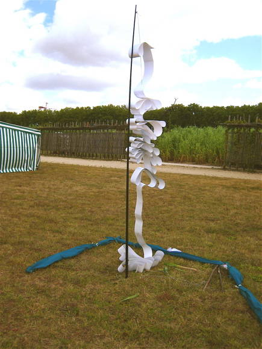
Au sol, diverses oeuvres d'art, non-figuratives, dans les JdVs...

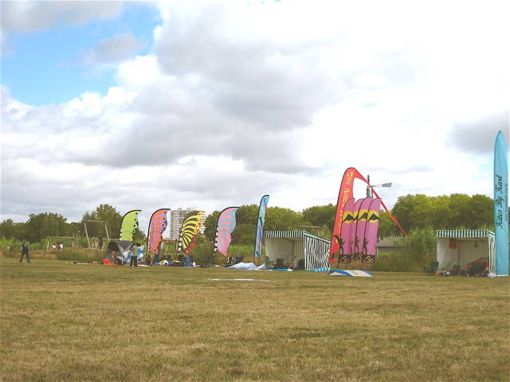
Sur le terrain des cerfs-volants, les équipes arrivent petit à petit... Vierzon (vent de Folie et ses demi-papillons), Sens (Les Sens Ciel avec ses pilotables, mais qui sortiront aussi dragon et hérisson), des Anglais dont Kites by Karl de Karl Longbottom, grand créateur avec ses petites culottes à dentelle et ses ptérodactyles !

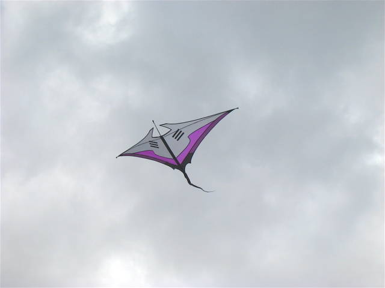
Bruno Cottenceau est là, il a créé de nouvelles raies Manta dans son style très pur, et en plusieurs harmonies de couleurs...

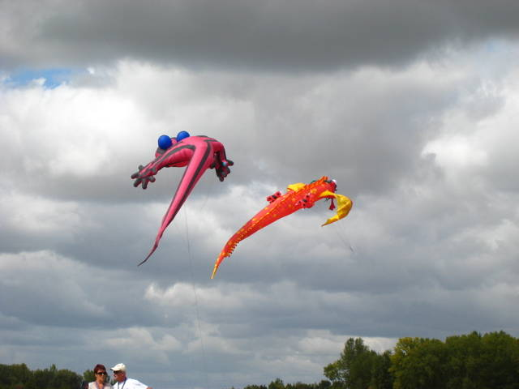
Ca y est, Sens a monté son dragon, accompagné d'un Gecko que je crois anglais...

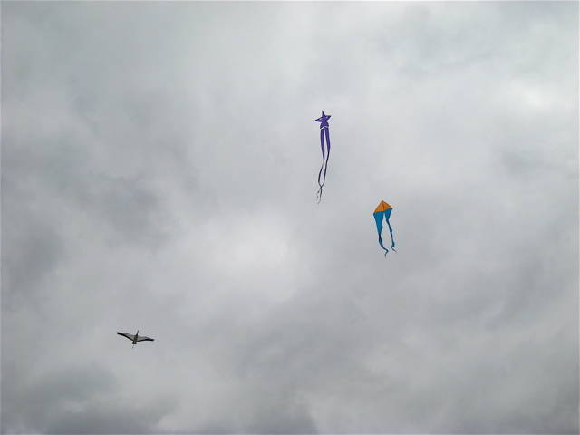
J'ai réussi à lever une de mes grues, mais le vent est trop irrégulier pour faire voler le couple... Jean-Pierre fait voler son Chula, aux côtés d'un Pyrodelta...

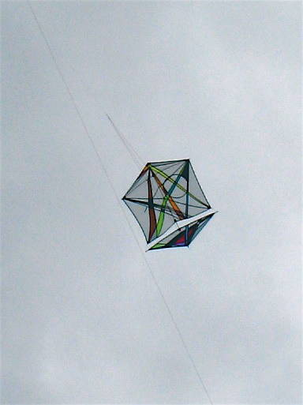
On voit aussi ce complexe Roller cinglé de couleurs diverses...

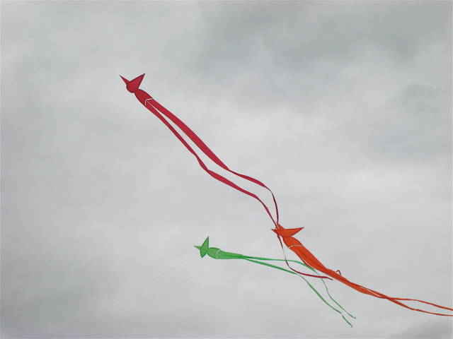
Les Folyangs de Vent de Folie sont de sortie, avec leur frénésie habituelle...

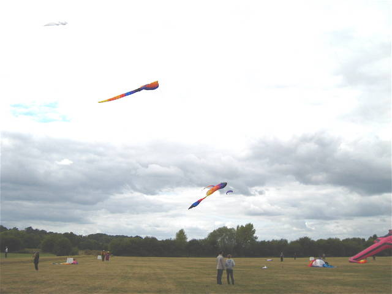
Les Anglais ont monté cette assez grande raie qui a volé un bon moment sans porteur... Plus au fond, un Trilobyte sans doute aussi à eux, avec des queues plutôt emmêlées...

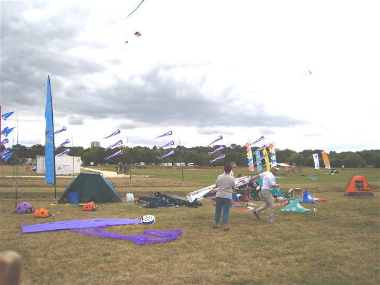
Comme d'habitude, Loïc et Jacqueline ont monté leur mur de queues tournantes, dont de nouvelles plus simples de conception, mais fonctionnant très bien !

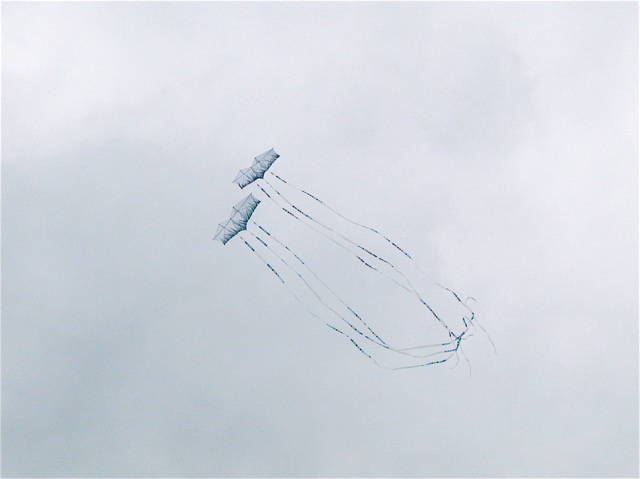
Hugo et Audrey, maintenant mariés, ont monté leur couple de très beaux Fagas ou assimilés qui flirtent avec amour !

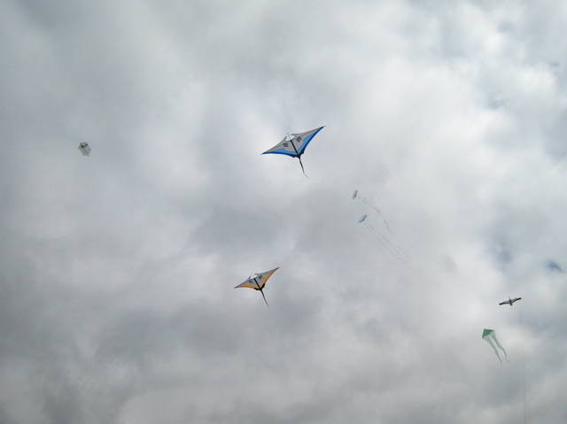
Bruno a sorti une deuxième raie dans des nuances différentes ! Il en a quatre ou cinq, mais je n'en verrai pas plus de trois en vol ensemble...

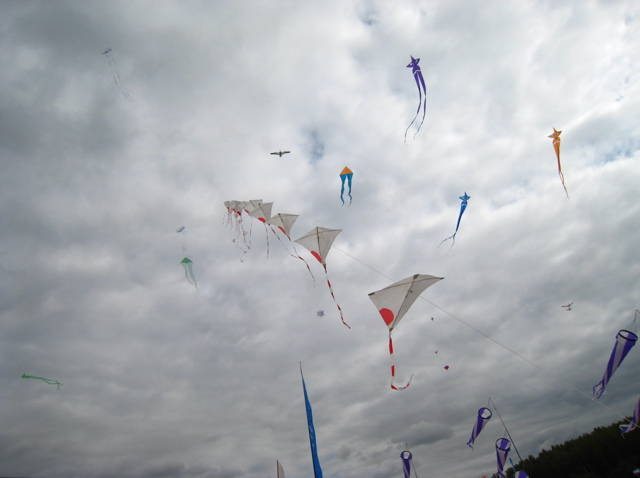
La famillle Lejosne monte un train de petits Eddies (ils adorent les petits cerfs-volants, le papa a un Sled de 5 cm d'envergure !). Ne manquez pas leur site, ça vaut le coup...

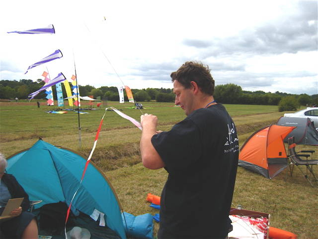
Le "petit" Lejosne répare le train au vol, pas facile !

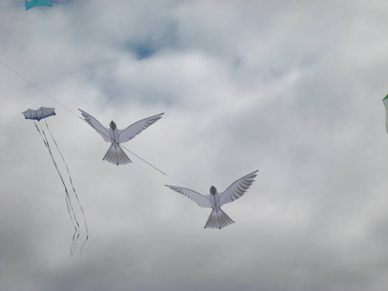
Karl Longbottom fait voler des couples d'oiseaux blancs, écartés par un balancier en carbone, ils tournent l'un autour de l'autre sans jamais s'accrocher comme un couple de colombes au temps des amours...

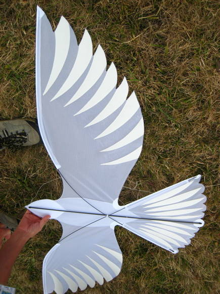
La structure est simple, en jonc de carbone. Une belle et harmonieuse astuce, le renfort des plumes par un doublage de Dacron semi-rigide et esthétiquement découpé et cousu... et qui se voit par transparence !

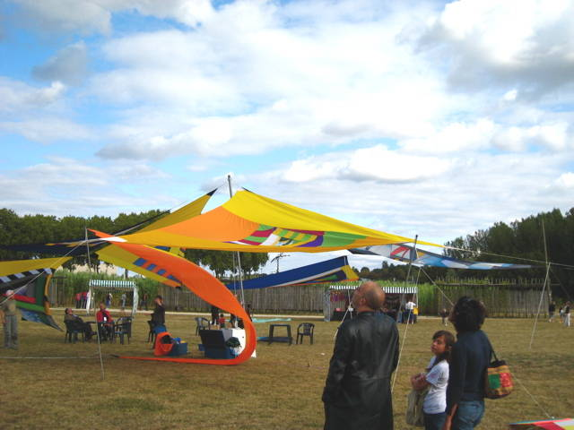
Sur la surface centrale, Michel a tendu ses velums qui, outre leur aspect esthétique, abriteront la terrasse du bar !

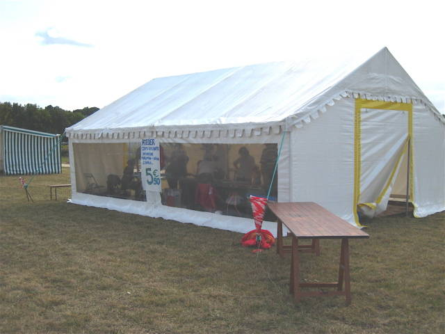
Plus loin, un atelier tournera les deux jours pour faire réaliser par les enfants des Eddies qu'ils décoreront eux-mêmes !

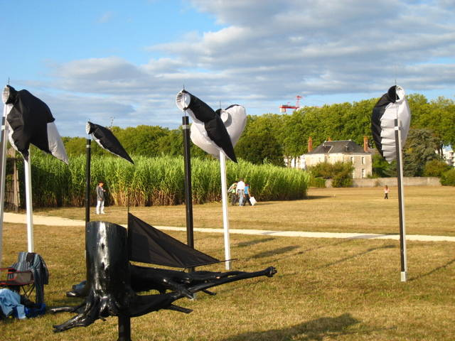
Dans les JdVs, une belle souche peinte en noir et tournant au gré du vent grâce à une voile ! Les espèces de sacs en forme d'abdomens mous d'insectes noirs et blancs ne forment pas un ensemble d'une folle gaîté...

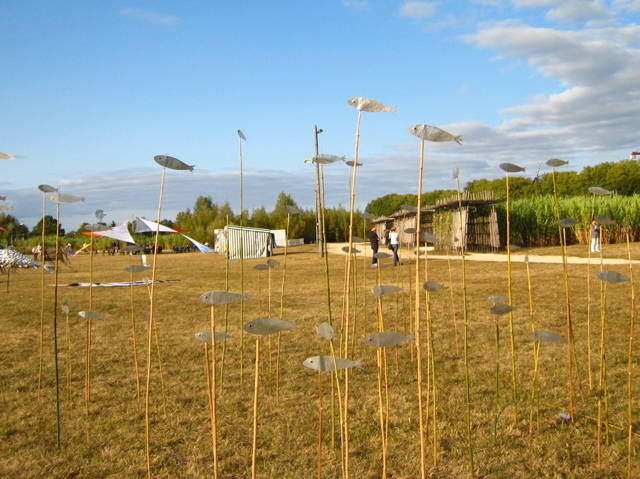
Plus loin, un banc de petits poissons en métal repoussé est plus amusant...

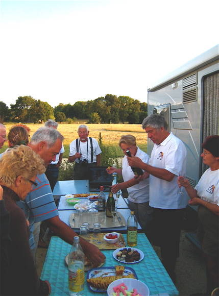
Au soir, les Schaefer offrent le champagne pour la naissance de leur petite-fille Manon ! Félicitations et merci !

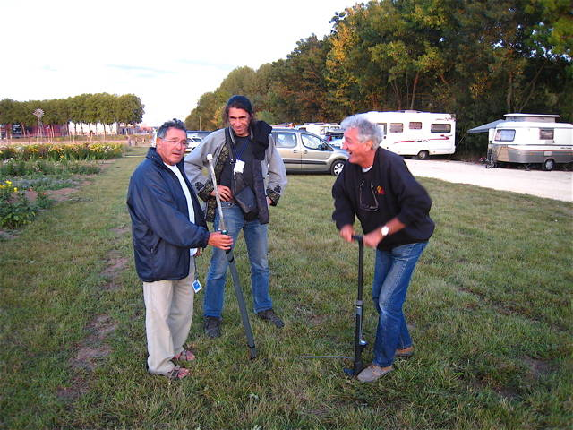
Je profite de l'occasion pour présenter ma dernière création, une fusée à air comprimé, encore un peu prototype, pas trop encombrante et qui monte vers 30 m, à vue de nez... Je ferai bientôt une page spéciale sur ce site...

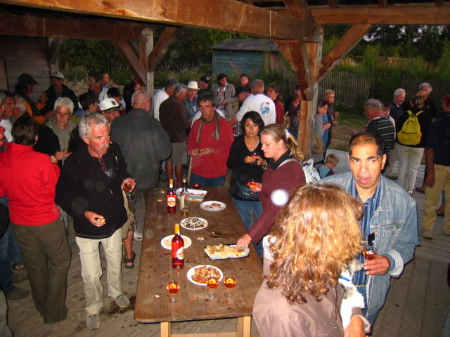
Ensuite, on change de pot pour celui, généreux, de l'organisation, c'est dur la vie de cervoliste...

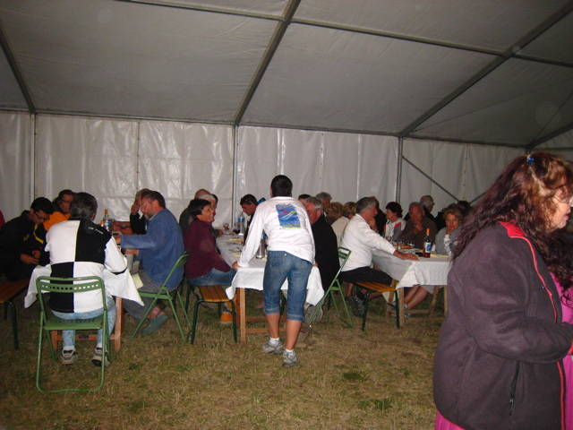
La journée se termine à table, par d'interminables discussions mêlant tous les sujets...

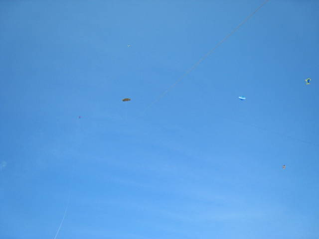
Dimanche matin, le vent commence encore très léger, mais il montera agréablement tout au long de la journée !

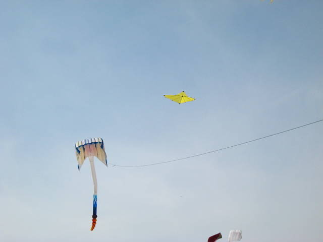
Un Jessica s'élève facilement, et Michel arrivera même à faire voler un de ses grands flow-forms, au prix de quelques chutes et redécollages au milieu des spectateurs dans les moments faibles...

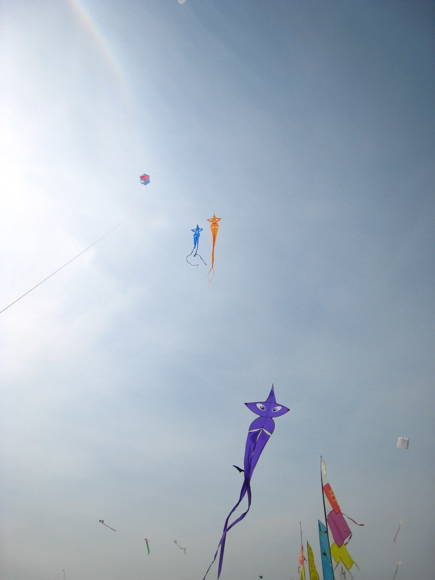
J'ai sorti mon Rokkaku de combat en attendant que le vent monte, mais je vais bientôt changer. Il y a maintenant 3 Chulas en vol, dont celui de Jean-Pierre et un au moins à Bernard Arus...

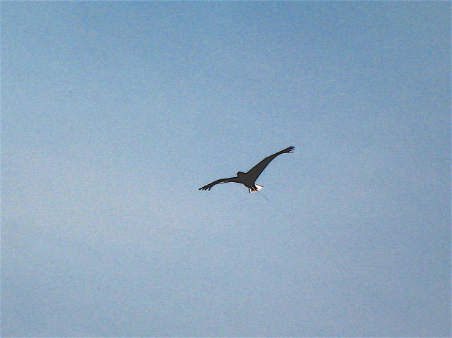
Le vent monte doucement. Un aigle anglais plane maintenant majestueusement sur la plaine...

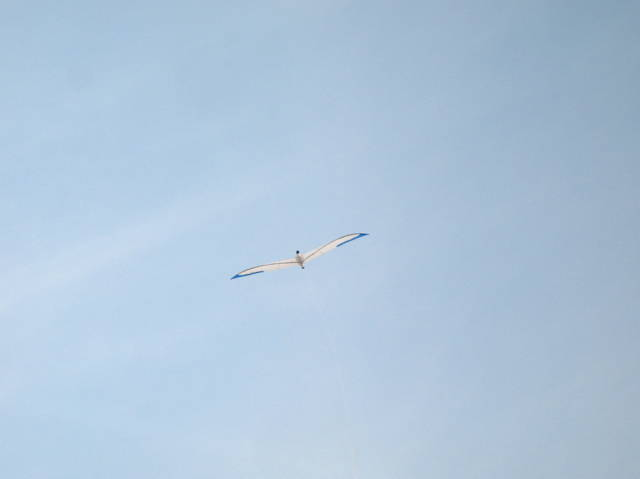
J'ai réussi après quelques allers-retours à monter mon Albatros, maintenant stable... Il montera même à la verticale dans un thermique... pour retomber évidemment aussi vite après un joli 360 !

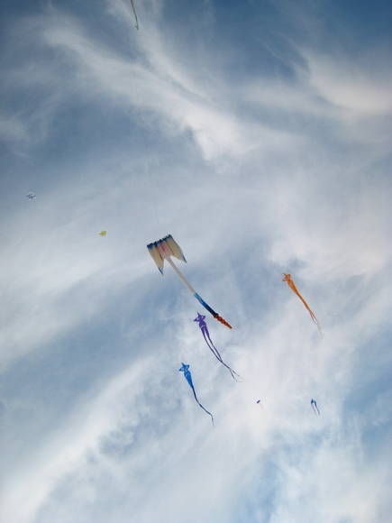
Là-haut, le flow-form et les Chulas sont maintenant tranquilles et stables dans leur magnificence...

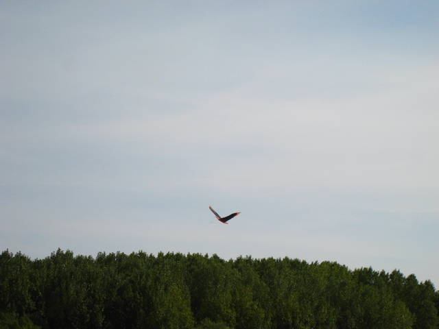
Mais que vois-je ? Un magnifique Albatros noir et rouge s'élève là-bas ! C'est celui des Mouchague qui est d'une grande stabilité...

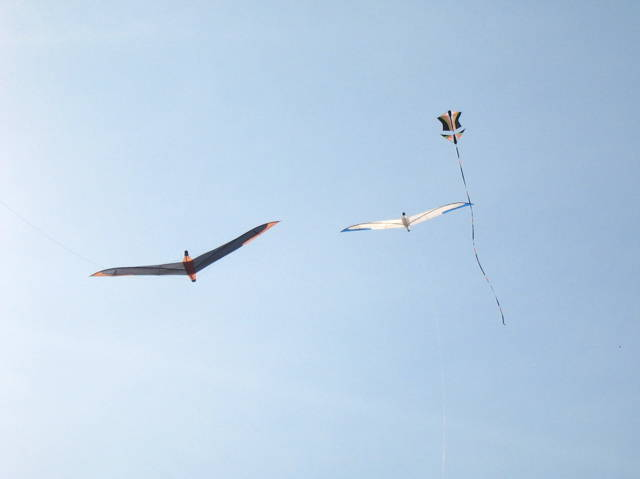
Et voilà, bientôt, nous volons de conserve, ou presque, je suis un peu plus haut, j'ai peur de trop descendre...

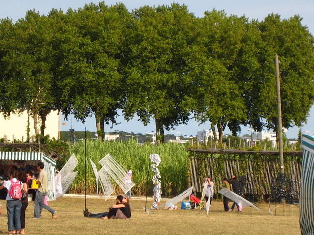
Dernier coup d'oeil au sol avant de partir, je dois malheureusement rentrer pour être tôt chez moi Lundi !

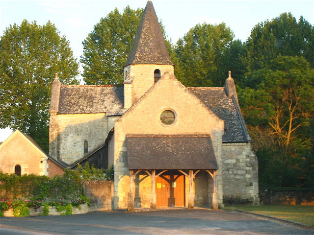
J'ai quand même le temps de faire un peu de tourisme le long du Cher, en admirant cette jolie église sans prétention et d'autant plus belle...

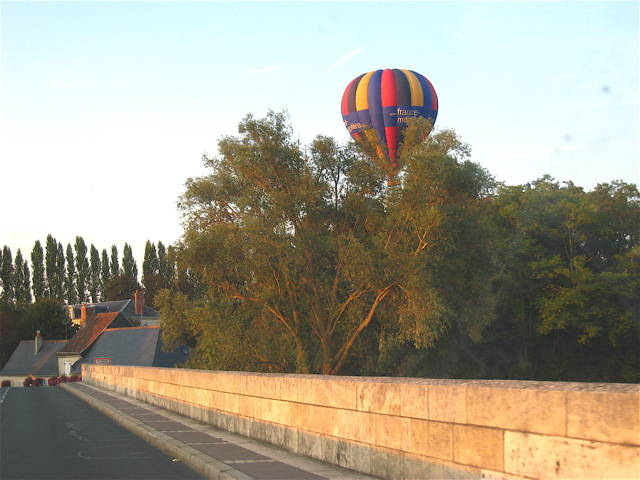
Je passe le Cher sur un vieux pont à arches de pierre, mais rénové par une chaussée élargie aux standards modernes ! Je suis survolé de Montgolfières, il y en a de tous côtés, près, loin, à droite comme à gauche...

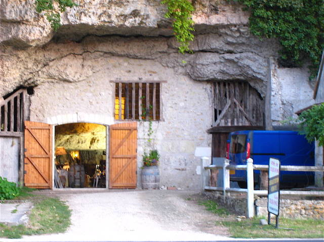
J'admire encore les jolis paysages accueillants et particuliers des bords de Loire...

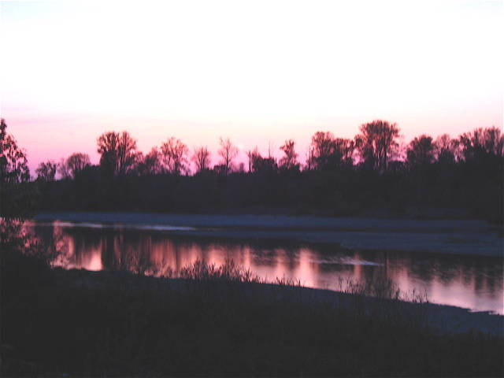
Mais le soleil se couche vraiment sur la Loire, il faut que je trouve un coin pour dîner et dormir... Ce sera à Chouzy sur Cisse.

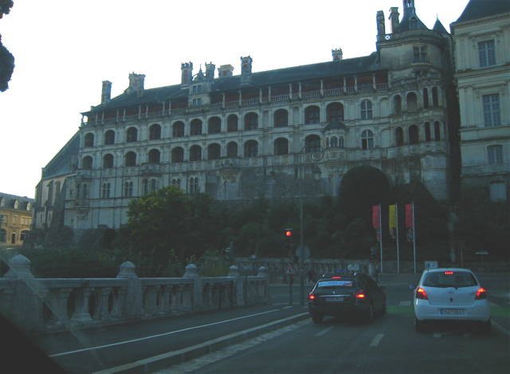
Lundi matin, je reprends la route, avec un petit passage à Blois, au pied du château !
Tours 2009 : Ambiance toujours agréable pour ce festival hors norme, où le public se mêle sans contrainte aux cervolistes !